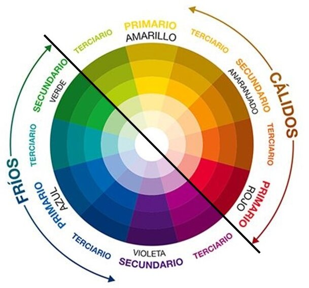

1 - Tipos de imágenes
1-1 - Vectores y mapa de bits
Las vectoriales, que son las que tiene compatibilidad con la geometría vinculada a fórmulas y ecuaciones matemáticas. El uso más frecuente es para los logos de una empresa, pues al definir matemáticamente el diseño siempre será replicado con exactitud y máxima nitidez.
Las de mapa de bits, que son más compatibles con las teorías de los conjuntos y trabaja agrupando píxeles. El mapa de bips es una cuadrícula donde cada cuadrado es un píxel. En este tipo de sistema, el gran problema será la calidad a la hora de reproducir, pues no existe, como en el anterior, una precisión matemática que pueda ser convertible. En este caso se agrupan por píxels y, muchas veces, para disminuir el peso de un imagen al ser compartida, se debe disminuir el número de píxels, afectando directamente la calidad, principalmente en las curvas.
2 - Formatos de imágenes
2-1 - Relación calidad y su "peso"
Cuando se habla del tamaño nos referiremos sólo a las dimensiones de la imagen: 13 x 18 cm, 1024 x 768 píxeles; y cuando se hable del espacio que ocupa la imagen en el dispositivo de almacenamiento –disco, memoria…- (3 Mbytes o 149 Kbytes) se definira como peso.
De esta manera, podemos decir que una imagen es:
- Grande cuando tiene un tamaño igual o mayor a 1024x768 píxeles
- Mediana cuando el tamaño va de 320x240 a 1024x768 píxeles
- Pequeña cuando el tamaño es menor a 320x240 píxeles
- Muy pequeña cuando es menor a 100x100 píxeles
O que es:
- Pesada si tiene 1 MB o más
- De peso mediano si va de 300KB a 1 MB
- Ligera si su peso es menor de 300KB
- Muy ligera si el peso es inferior a 100KB
2-1 - Formatos web: “jpg”, “gif”, “png”. Características, pros y contras de cada uno de ellos
- JPG
Las características del formato gráfico JPEG son:
- Formato gráfico de mapa bits.
- Soporte de color verdadero, también conocido por su homónimo inglés true color (24 Bits).
- Algoritmo de compresión (con pérdida) que soporta altas tasas de empaquetado (1/20 y más).
- GIF
Las características del formato gráfico JPEG son:
- Tiene un formato ligero, lo que permite su reproducción en cualquier dispositivo.
- Cuentan con una capacidad alta de llamar la atención y permite la comprensión rápida y sin esfuerzo de lo que intentan transmitir.
- Generan notoriedad y compromiso. Es una forma de relacionarse rápidamente a un concepto y llegar a un público objetivo.
- Son un formato que cuenta con una gran capacidad de viralización.
- PNG
Sus características principales son:
- Permite almacenar imágenes en blanco y negro.
- Utiliza una paleta de 256 colores.
- Soporta la transparencia de canal alfa.
- Posee una función de entrelazado que permite mostrar la imagen de forma gradual.
- La compresión que ofrece este formato es (compresión sin pérdida) de 5 a 25% mejor que la compresión GIF.
- Almacena información gama de la imagen, que posibilita una corrección de gama y permite que sea independiente del dispositivo de visualización.
- PNG ofrece una gran variedad de opciones de transparencia.
3 - Software para procesar imágenes
3-1 - Herramientas para el procesamiento de imágenes
3-1-1 - Photoshop
Adobe Photoshop es un editor de fotografías desarrollado por Adobe Systems Incorporated. Usado principalmente para el retoque de fotografías y gráficos, su nombre en español significa "taller de fotos". Photoshop puede editar y componer imágenes rasterizadas y soporta varios modelos de colores: RGB, CMYK, CIELAB, colores sólidos y semitonos. Photoshop usa sus propios formatos de archivo PSD y PSB para soportar estas características.
GIMP (siglas en inglés de GNU Image Manipulation Program) es un programa de edición de imágenes digitales en forma de mapa de bits, tanto dibujos como fotografías. Es un programa libre y gratuito. Forma parte del proyecto GNU y está disponible bajo la Licencia pública general de GNU y GNU Lesser General Public License. Es el programa de manipulación de gráficos disponible en más sistemas operativos (Unix, GNU/Linux, FreeBSD, Solaris, Microsoft Windows y macOS, entre otros). GIMP permite el tratado de imágenes en capas, para poder modificar cada objeto de la imagen en forma totalmente independiente a los demás elementos en otras capas de la imagen.

Pixlr es un conjunto de herramientas y utilidades de edición de imágenes basado en la nube, que incluye varios editores de fotos y un servicio para compartirlas.
4 - Software para procesar imágenes
4-1 - Conceptos “Resolución” y “Profundidad del color o paleta de colores”
La resolución de una imagen indica la cantidad de detalles que puede observarse en esta. El término es comúnmente utilizado en relación a imágenes de fotografía digital, pero también se utiliza para describir cuán nítida (como antónimo de granular) es una imagen de fotografía convencional (o fotografía química). Tener mayor resolución se traduce en obtener una imagen con más detalle o calidad visual.
La profundidad de color o bits por píxel (bpp) es un concepto de la computación gráfica que se refiere a la cantidad de bits de información necesarios para representar el color de un píxel en una imagen digital o en un framebuffer.
4-2 - Recomendaciones para las imágenes en la web (dimensiones, formato, resolución, paleta de colores….)
- Dimensiones
Como referencia un tamaño de unos 1350px de ancho o 900px de alto como máximo.
Para las fotos que se muestran como fondo de la web y que por tanto ocuparán toda la pantalla es recomendable que no sobrepasen los 1950px de ancho.
- Formato
En general se usa PNG para todas las imágenes que componen las páginas web (logotipos, iconos, botones…) y JPG solo para las fotografías, sobre todo las grandes.
- Resolucion
La resolución recomendada para imágenes web oscila entre los 75 y los 150.
- Paleta de colores
Es recomendable hacer combinación de colores:
- Contraste de colores
Si en tus fotografías contrapones colores primarios con secundarios, lograrás el mayor grado de contraste visual. Los colores complementarios son:
Amarillo – Violeta; Rojo – Verde; Azul – Naranja.
- Mezclar colores cálidos y fríos
Visualmente se dice que, en una imagen, los colores fríos (verdes, azules) retroceden y los cálidos (naranjas, amarillos, marrones, dorados, rojos) avanzan. Por eso, mezclarlos te ayudará a acentuar los planos.

5 - Herramientas de optimización de imágenes
5-1 - Herramientas específicas con procesos de optimización y reducción de tamaño
- Free Image Optimizer
Con este servicio en línea gratuito, puede cambiar el tamaño, comprimir y optimizar sus archivos de imagen. Son más adecuados para páginas web, archivos adjuntos de correo electrónico o incluso almacenamiento en su disco.
- Dosize
Dosize nos permitirá elegir un conjunto de imágenes de nuestro ordenador a los que daremos un nuevo tamaño para posteriormente enviarlo a nuestros amigos por correo electrónico.
Las imágenes de nuestras cámaras digitales suelen hacer fotografías muy pesadas, demasiado grandes con lo que con esta web podremos redimensionarlas para poder enviarlas a nuestros contactos por correo electrónico.
6 - Herramientas de optimización de imágenes
6-1 - Distinción entre imágenes de contenido e imágenes de “adorno”.
La etiqueta de imagen HTML  representa una imagen de contenido en el documento. Las imágenes de adorno se modifican en CSS.
representa una imagen de contenido en el documento. Las imágenes de adorno se modifican en CSS.
6-2 - La etiqueta "img" con los atributos más relevantes
El elemento de imagen/Image configura gráficos en una página web. El atributo src indica la URL o nombre de archivo de la imagen. El atributo alt proporciona un reemplazo de texto, típicamente una descripción de texto, de la imagen. El atributo width representa el ancho de la imágenes y el atributo height la altura de las imágenes. El atributo title muestra el título de la imagen.